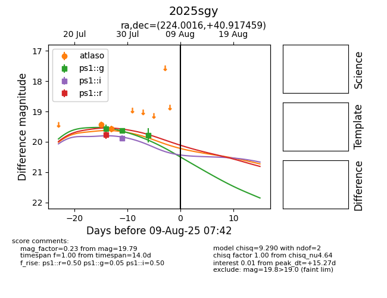

Target 2025sgy at 2025-08-09 08:07, see:
YSE: ziggy.ucolick.org/yse/transient_detail/2025sgy
alt names
2025sgy (yse)
coordinates:
equatorial (ra, dec) = (224.0016,+40.91746)
galactic (l, b) = (69.3212,+60.95749)
photometry
last atlaso=19.58, ps1::g=19.79, ps1::i=19.88, ps1::r=19.77
2 atlaso, 3 ps1::g, 1 ps1::i, 1 ps1::r detections
